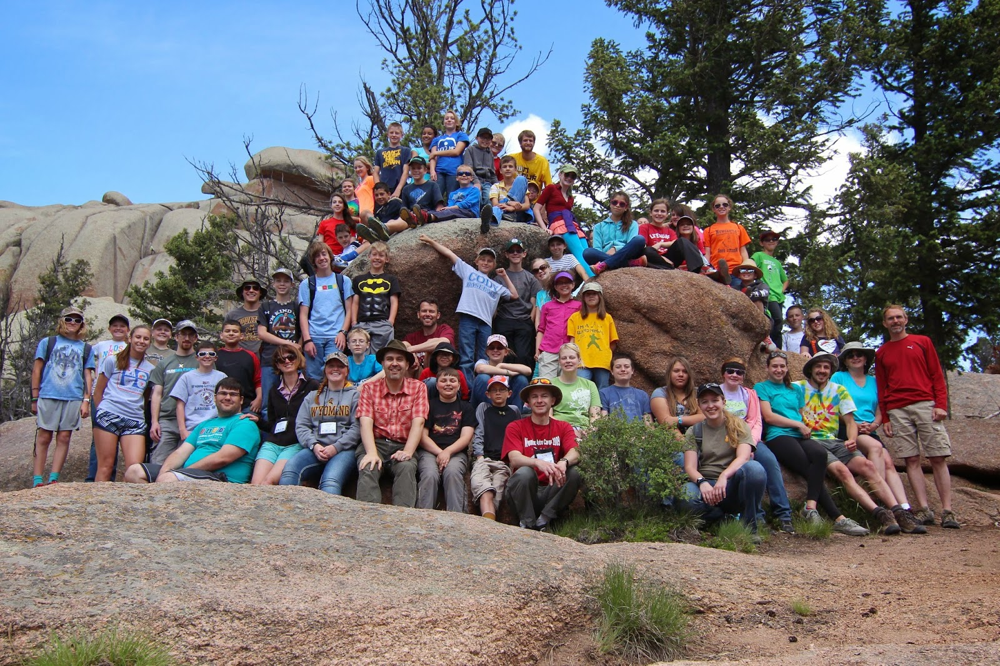

Teaching
In Fall 2017, I was the teaching assistant for ASTR 300A, the upper-division majors class that taught dynamics and mechanics in astrophysics. I taught the computing workshops in the class (examples
of the activities can be found here). I also provided in-class assistance, proctored all tests, graded all homeworks and exams,
created solution sets, and held well-attended office hours.
In Spring 2018, I was the teaching assistant for ASTR 208, which is a non-majors science class that covered topics relating to the interplay of energy, society, and the environment. I was responsible
for all grading, and I helped with in-class activities and gave a few lectures over the course of the semester.
I was an ATOMM (Astronomy Tutoring of Majors and Minors) tutor from Fall 2017-Spring 2018. As an ATOMM tutor, I spent about 5 hours a week helping undergraduates with any astronomy-adjacent questions
they had. I had to think quickly on my feet and be flexible, as I had questions ranging from introductory astronomy, to vector calculus, to quantum mechanics.
Outreach and Mentoring
I have been involved with a wide variety of of diversity and outreach initiatives over the years. For a more comprehensive list, please see my CV, but I
list some of my favorites below.

Tucson Women in Astronomy
I have been an active member of Tucson Women in Astronomy (TWA) for my six years of graduate school. TWA is an organization that strives to provide networking opportunities and a
community for all female graduate students and postdocs in astronomy in Tucson. I spent two years as the chair of TWA, during which I organized over 20 networking teas with female
colloquium speakers who came through Steward. I also organized the TWA undergraduate mentoring program, where TWA members mentored undergraduates in astronomy to give them encouragement
and support to finish their astronomy degrees and go on to graduate school. Finally, as chair, I secured an annual budget from the Friends of Steward Observatory to fund TWA activities
in the future.
Mentoring
I have mentored many undergraduates at both the University of Arizona and at other institutions. I frequently provide advice on how to prepare for graduate school or careers in
industry, and how and why to get involved in undergraduate research. My relationships with graduate students when I was an undergraduate made me more confident and successful when I
went to graduate school, and I hope to continue the trend into the future.
I have been co-mentoring UA undergraduate Trevor Smith with my advisor on his undergraduate thesis research. It has been incredibly rewarding to see his development into a
promising researcher.
I have also formally and informally mentored junior graduate students in the department.
Teen Astronomy Cafe
I have been volunteering at NOAO's Teen Astronomy Cafes, which are monthly workshops designed to give high school students
the feeling for how real astronomy works. Each cafe contains a short lecture by an astronomer, a hands-on programming activity using real data, and finally, a lunch with time to chat
with astronomers. I have helped facilitate several cafes over the past two years, and I am creating an activity with
Christine O'Donnell based on N-body simulations of the Solar System that will be presented in April 2020.
Project ASTRO
I participated in two cohorts of NOAO's Project ASTRO, which pairs astronomers with local teachers. I worked with
Tucson high school teachers, and did several classroom visits to talk about astronomy, gravity, and planetary habitability. Through Project ASTRO, I also connected with a few local
star parties and science nights.